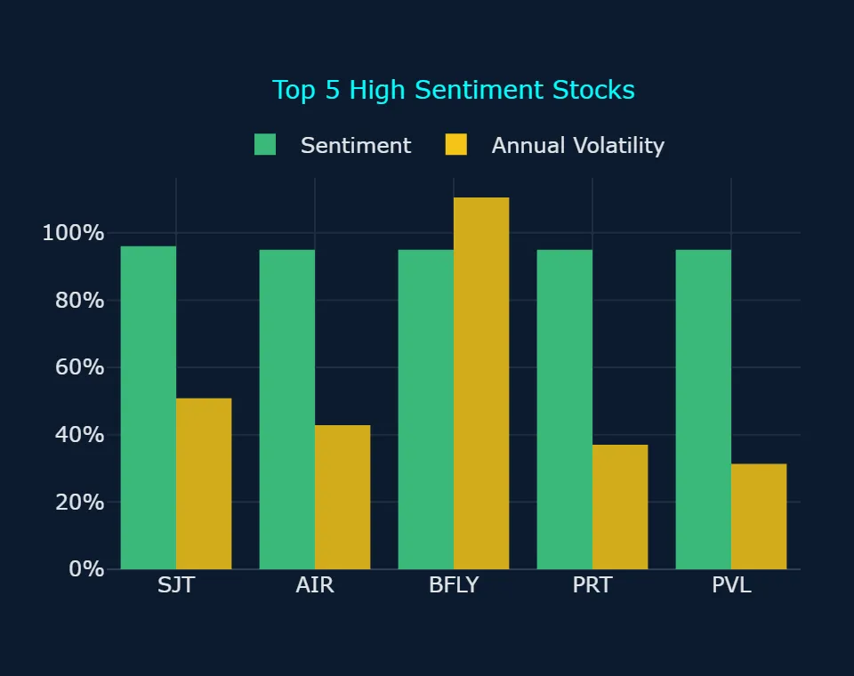
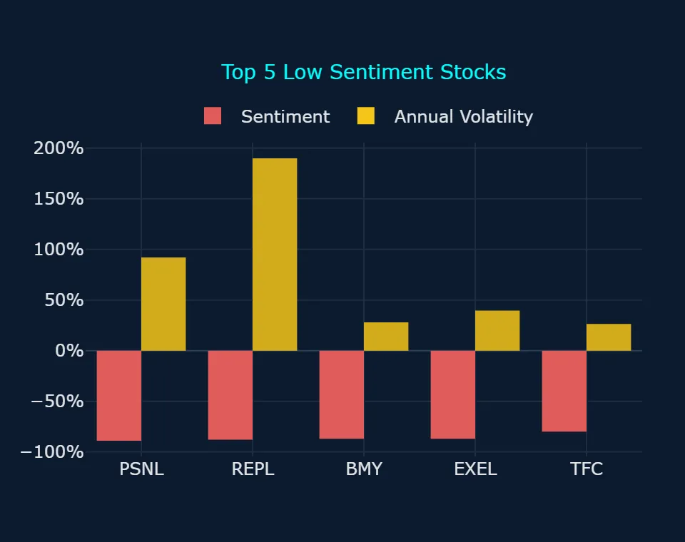
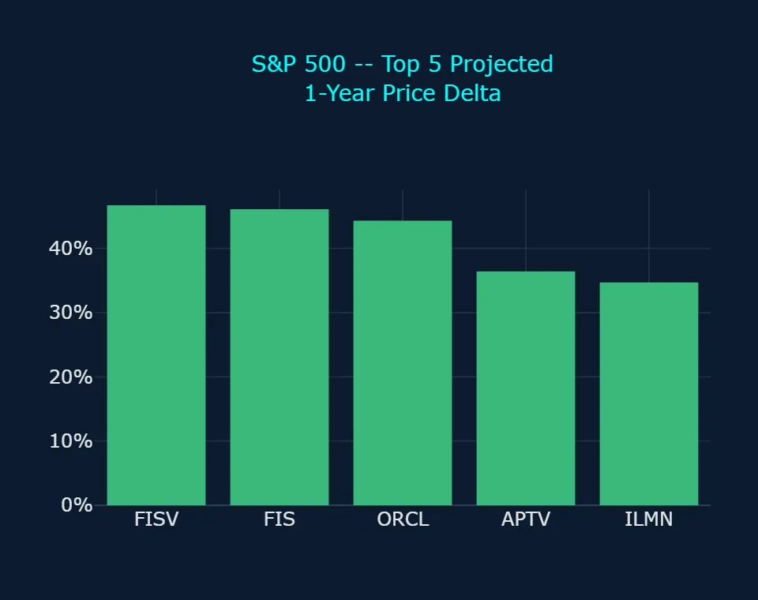
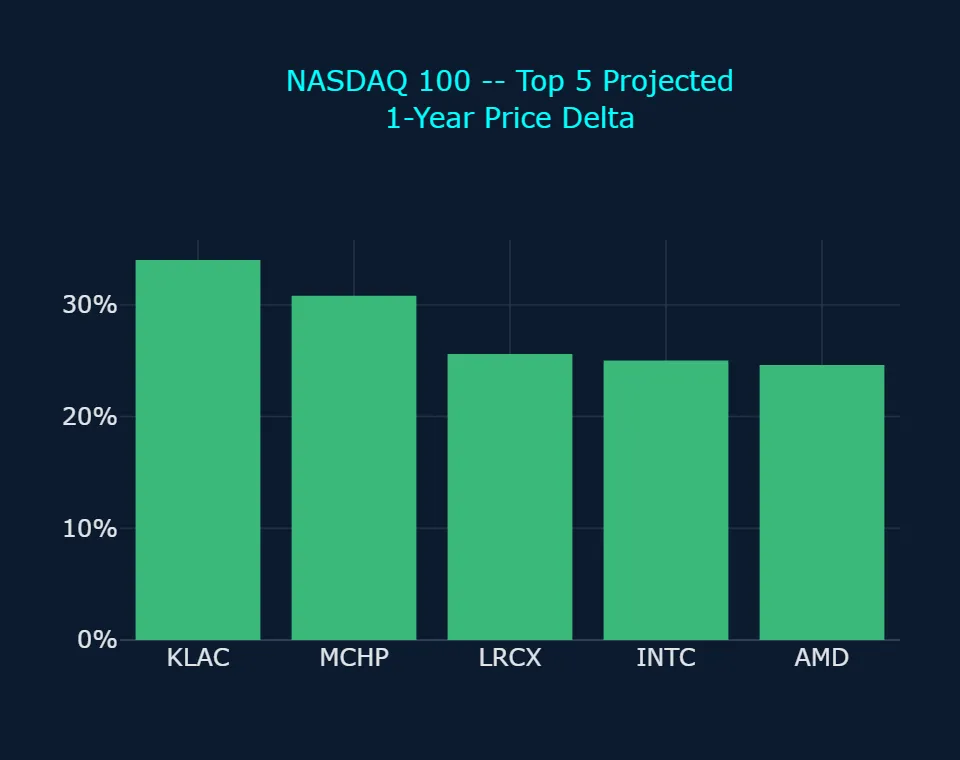
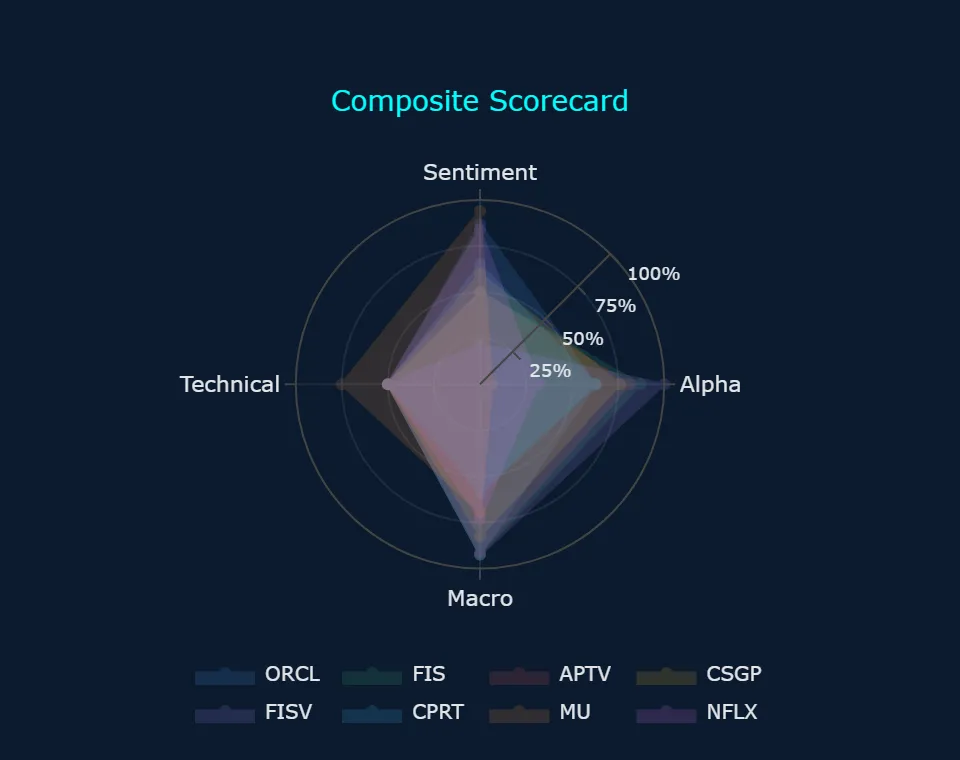
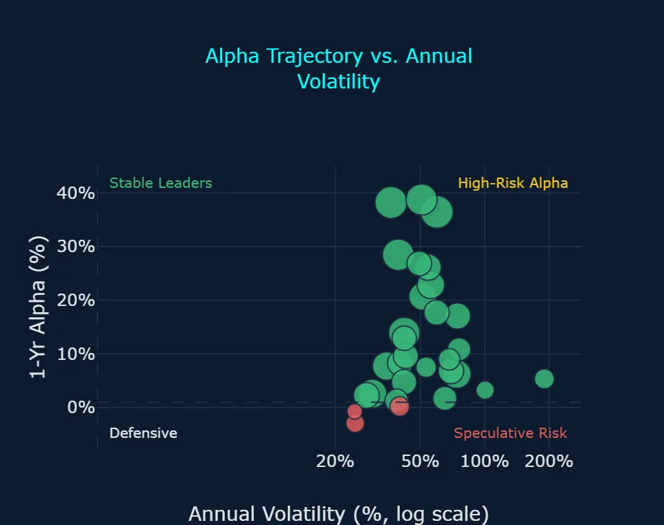
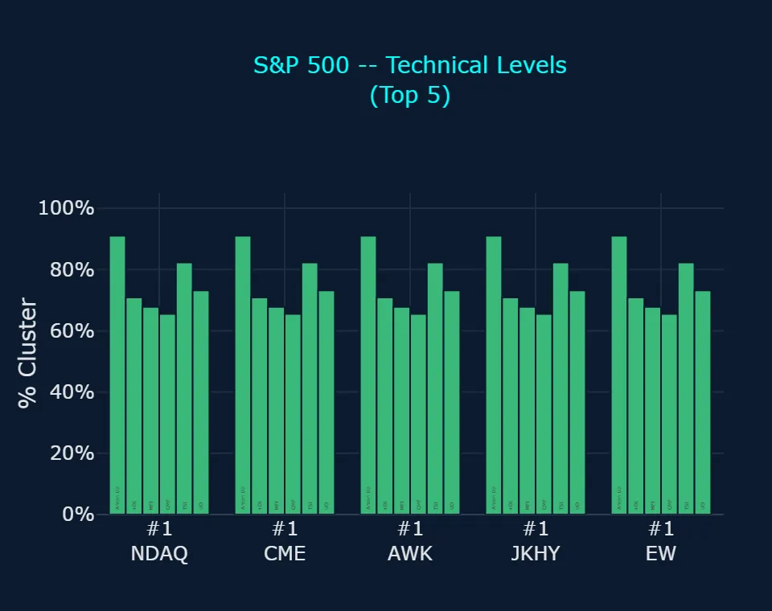
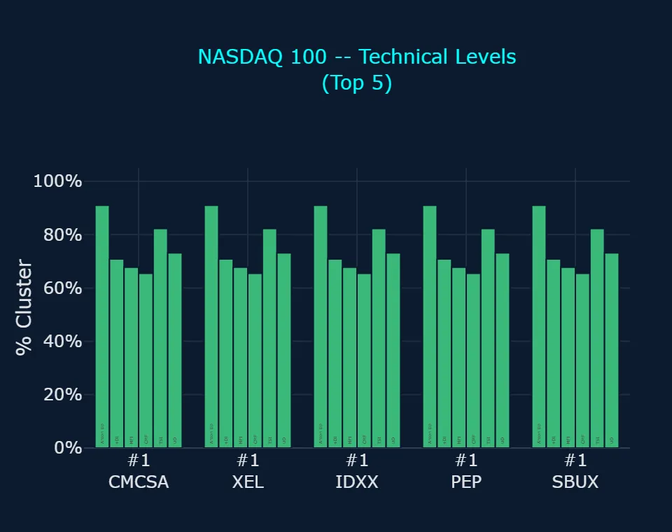
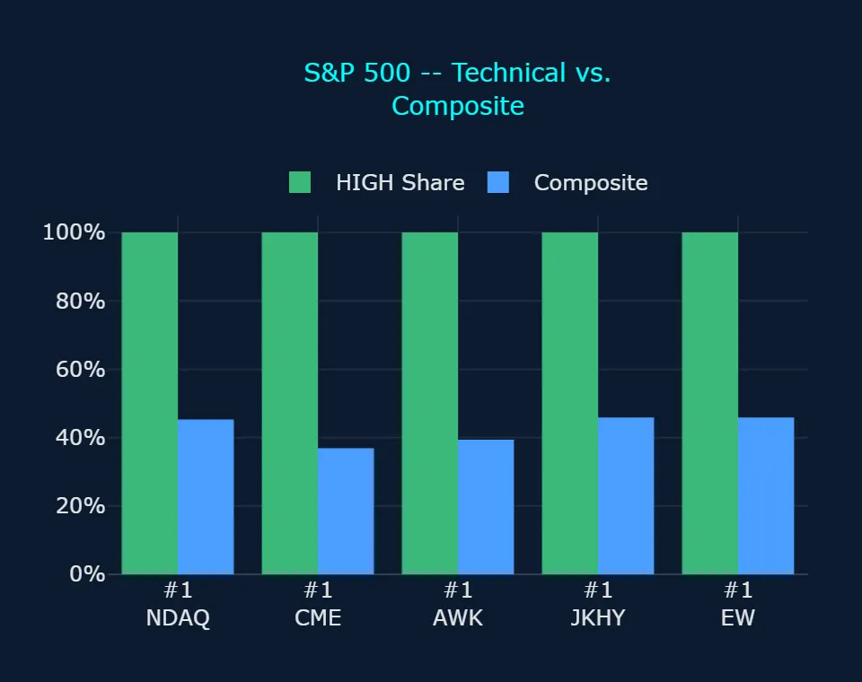
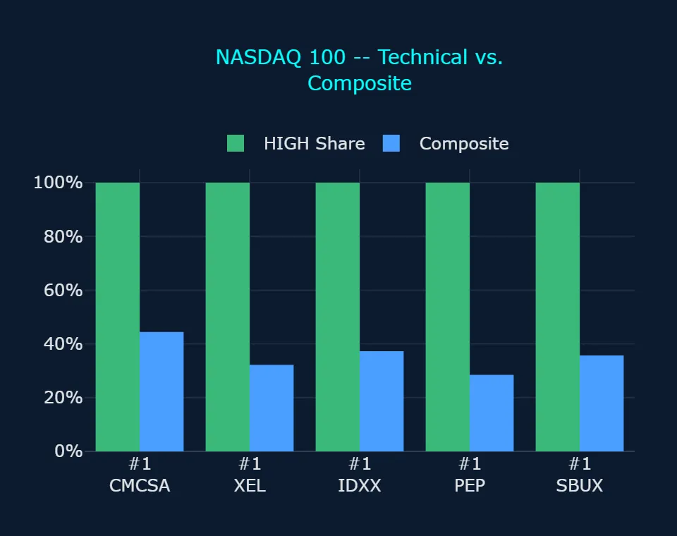

Zoonova AI: Pre-Market Quantitative Briefing – November 13, 2026
Session Quantitative Briefing: The Zoonova AI Intelligence Engine executes a hybrid architecture combining a proprietary Quad-Ensemble machine learning framework with Google Gemini Flash for real-time contextual synthesis and semantic macroeconomic grounding. The quantitative pipeline integrates four specialized estimators: Random Forest Regressor (RFR) for baseline structural stability, eXtreme Gradient Boosting (XGB) optimized for residual loss minimization, Categorical Boosting (CAT) for high-cardinality categorical signal processing, and Temporal Fusion Transformer (TFT) for multi-horizon price and volatility forecasting.
Zoonova AI: Pre-Market Momentum & Liquidity Report
1. QUANTITATIVE MODEL OVERVIEW & SIGNAL METRICS
Zoonova predictive intelligence synthesizes raw macroeconomic trend indicators and market-wide breadth through a multi-tiered machine learning framework. Predictive price targets and alpha probabilities are generated via Zoonova's Quad-Ensemble architecture, combining Random Forest Regressor [RFR], eXtreme Gradient Boosting [XGB], Categorical Boosting [CAT], and Temporal Fusion Transformer [TFT]. Sentiment dynamics are evaluated using VADER scoring across financial commentary, while systemic regime shifts and structural market disruptions are detected using BIRCH clustering for breadth modeling and anomaly detection.
- SPDR S&P 500 ETF Trust (SPY) closed at $757.12 on 2026-11-12 with sentiment at -5.0% and an annualized volatility of 16.89%, while the ML ensemble projects a 1-year price target of $816.86 representing an implied gain of +7.9% and a neutral 1-year alpha of 0.00% (Zoonova, 2026-11-12).
- Invesco QQQ Trust Series 1 (QQQ) closed at $688.17 on 2026-11-12 with sentiment at 0.0% and an annualized volatility of 22.65%, projecting an implied 1-year advance of +15.7% to $796.46 alongside a positive 1-year alpha of +7.84% (Zoonova, 2026-11-12).
- SPDR Dow Jones Industrial Average ETF (DIA) closed at $522.47 on 2026-11-12 with sentiment at 0.0% and an annualized volatility of 15.19%, with projections showing an implied 1-year gain of +4.0% to $543.36 and an expected 1-year alpha of -3.90% (Zoonova, 2026-11-12).
- Fixed income and defensive benchmarks indicate heightened macro divergence, as Vanguard Total Bond Market ETF (BND) closed at $70.65 with an annualized volatility of 4.42% and an implied 1-year projection of $75.05 (+6.2%), whereas SPDR Gold Shares ETF (GLD) closed at $354.89 with an annualized volatility of 24.80% and a 1-year alpha of -2.91% while carrying dual bearish trend anomalies (Zoonova, 2026-11-12).
2. SENTIMENT INSIGHTS – TOP 5 HIGH & LOW
Top 5 High Sentiment Stocks
| Ticker | Company Name | Sentiment Score | Primary Catalyst / Driver |
|---|---|---|---|
| SJT | San Juan Basin Royalty Trust | +96.0% | San Juan Basin Royalty Trust experienced elevated sentiment following substantial insider accumulation by major shareholder Eric Oliver, who acquired 352,364 units for $1.4 million across open-market transactions (Quantisnow, 2026-11-12). |
| AIR | AAR Corp. | +95.0% | AAR Corp. saw bullish sentiment driven by a new multi-year radome repair agreement with Airbus Avionics alongside a proposed $1.915 billion senior notes offering to refinance debt and accelerate aftermarket operations (AAR Corp., 2026-11-09). |
| BFLY | Butterfly Network Inc | +95.0% | Butterfly Network generated high enthusiasm after delivering 52% year-over-year third-quarter revenue growth to $32.6 million, recording a record 73% gross margin, and increasing full-year revenue guidance (Business Wire, 2026-10-30). |
| PRT | PermRock Royalty Trust | +95.0% | PermRock Royalty Trust benefited from strong distribution interest after declaring a monthly cash distribution of $0.016204 per unit payable in mid-November for unitholders of record (TradingView, 2026-10-19). |
| PVL | Permianville Royalty Trust | +95.0% | Permianville Royalty Trust attracted positive attention after announcing its monthly cash distribution payable on 2026-11-13, supported by increased natural gas receipts and three new producing wells in the Haynesville basin (Stock Titan, 2026-10-18). |
Top 5 Low Sentiment Stocks
| Ticker | Company Name | Sentiment Score | Primary Friction / Risk Factor |
|---|---|---|---|
| PSNL | Personalis Inc | -89.0% | Personalis suffered depressed sentiment due to active shareholder investigations into its pending $16.25 per share acquisition by Tempus AI and a widened third-quarter net loss of $33.8 million (PR Newswire, 2026-11-03). |
| REPL | Replimune Group Inc | -88.0% | Replimune Group remains weighed down by commercialization execution risks and clinical trial efficacy scrutiny for its lead melanoma program (Replimune Group Inc., 2026-10-28). |
| BMY | Bristol-Myers Squibb Co. | -87.0% | Bristol-Myers Squibb faces persistent negative pressure over looming 2028 patent cliffs for megablockbuster drugs Eliquis and Opdivo, which account for half of historical company revenues (Endpoints News, 2026-10-29). |
| EXEL | Exelixis Inc | -87.0% | Exelixis sentiment is weighed down by ongoing Paragraph IV patent litigation challenges against generic filers and an extended FDA review timeline for its zanzalintinib combination application into March 2027 (Exelixis, Inc., 2026-10-29). |
| TFC | Truist Financial Corporation | -80.0% | Truist Financial was pressured by persistent funding friction and an earnings top-line shortfall in its third-quarter report that missed consensus revenue forecasts (Newsquawk, 2026-10-16). |
3. ALPHA PROBABILITY & PRICE DELTA LEADERBOARD – 1-YEAR HORIZON
S&P 500 – Top 5 High Alpha Probability (1yr)
| Ticker | Current Price ($) | 1-Yr Target Price ($) | Alpha Probability (%) | Implied Excess Alpha (%) | 10%+ Alpha? |
|---|---|---|---|---|---|
| FISV | $61.50 | $90.19 | 93.54% | 38.77% | Both Yes |
| FIS | $28.36 | $41.44 | 81.45% | 38.21% | Both Yes |
| APTV | $38.81 | $52.93 | 76.09% | 28.47% | Both Yes |
| CSGP | $30.10 | $36.66 | 71.10% | 13.92% | Both Yes |
| HBAN | $15.73 | $17.33 | 67.79% | 2.26% | Split |
S&P 500 – Top 5 Price Delta + % Change (1yr)
| Ticker | Current Price ($) | 1-Yr Target Price ($) | Absolute Delta ($) | Projected 1-Yr % Change (%) | Implied Excess Alpha (%) |
|---|---|---|---|---|---|
| FISV | $61.50 | $90.19 | $28.69 | 46.65% | 38.77% |
| FIS | $28.36 | $41.44 | $13.08 | 46.12% | 38.21% |
| ORCL | $127.11 | $183.48 | $56.37 | 44.35% | 36.46% |
| APTV | $38.81 | $52.93 | $14.12 | 36.38% | 28.47% |
| ILMN | $209.55 | $282.36 | $72.81 | 34.75% | 26.86% |
NASDAQ 100 – Top 5 High Alpha Probability (1yr)
| Ticker | Current Price ($) | 1-Yr Target Price ($) | Alpha Probability (%) | Implied Excess Alpha (%) | 10%+ Alpha? |
|---|---|---|---|---|---|
| CPRT | $32.00 | $35.34 | 58.69% | 2.59% | Split |
| PYPL | $58.30 | $67.75 | 43.61% | 8.31% | Both No |
| NFLX | $62.69 | $72.49 | 29.45% | 7.75% | Both No |
| PDD | $77.53 | $84.64 | 28.55% | 1.28% | Both No |
| DXCM | $81.39 | $91.66 | 25.72% | 4.73% | Both No |
NASDAQ 100 – Top 5 Price Delta + % Change (1yr)
| Ticker | Current Price ($) | 1-Yr Target Price ($) | Absolute Delta ($) | Projected 1-Yr % Change (%) | Implied Excess Alpha (%) |
|---|---|---|---|---|---|
| KLAC | $157.30 | $210.85 | $53.55 | 34.04% | 26.16% |
| MCHP | $62.08 | $81.17 | $19.09 | 30.75% | 22.86% |
| LRCX | $233.78 | $293.62 | $59.84 | 25.60% | 17.70% |
| INTC | $61.20 | $76.47 | $15.27 | 24.95% | 17.06% |
| AMD | $585.30 | $729.55 | $144.25 | 24.65% | 16.76% |
4. REAL-TIME CONTEXTUAL ENRICHMENT
Macroeconomic sentiment entering the trading session on 2026-11-13 is heavily dominated by recalibrated Federal Reserve interest rate expectations following hotter-than-expected October Consumer Price Index data, which revealed headline inflation rising 0.4% month-over-month (American Action Forum, 2026-11-12). Hawkish rhetoric from Federal Reserve officials, including Governor Christopher Waller and Dallas Fed President Lorie Logan, has caused bond markets to price in heightened odds of a 25 to 50 basis point rate hike at the December 2026 Federal Open Market Committee meeting (MUFG Research, 2026-11-12). In morning trading on 2026-11-13, equity index futures remained cautious ahead of the October wholesale Producer Price Index release, while gold prices dropped sharply beneath $4,000 per ounce due to surging Treasury yields and US dollar strength (BullionVault, 2026-11-12; TipRanks, 2026-11-13). This macro tightening aligns with Zoonova ML breadth metrics, which registered moderate-severity bearish trend anomalies across SPDR Gold Shares ETF (GLD) and iShares Gold Trust (IAU) on 2026-11-12.
Within corporate fundamentals, the top-ranked names by alpha probability demonstrate idiosyncratic catalysts capable of decoupling from broader macro headwinds. Fiserv, Inc. (FISV) leads the S&P 500 alpha probability ranking with a 93.54% probability of achieving +10% 1-year excess alpha, supported by expanding merchant acceptance on its Clover platform and accelerating holiday sales volume (Fiserv, Inc., 2026-11-10; Zoonova, 2026-11-12). Fidelity National Information Services, Inc. (FIS) posts an 81.45% 1-year alpha probability and an expected 1-year alpha of +38.21%, as management actively evaluates divestitures of non-core capital markets operations to sharpen balance sheet efficiency (Payments Dive, 2026-08-04; Zoonova, 2026-11-12). Aptiv PLC (APTV) holds a 76.09% 1-year alpha probability and a projected 1-year price of $52.93 from its $38.81 close, bolstered by robotics expansion agreements and automotive architecture demand (Aptiv PLC, 2026-11-06; Zoonova, 2026-11-12). Similarly, CoStar Group, Inc. (CSGP) exhibits a 71.10% alpha probability and an expected 1-year alpha of +13.92%, supported by upward revisions in national multifamily and commercial retail absorption forecasts (CoStar Group, 2026-11-04; Zoonova, 2026-11-12). In contrast, Huntington Bancshares, Inc. (HBAN) displays a 67.79% alpha probability alongside a modest +2.26% 1-year alpha where the two models split, as expanding net interest margins are countered by necessary credit reserve additions (Stock Titan, 2026-10-22; Zoonova, 2026-11-12).
Sector breadth highlights pronounced divergence between specialized semiconductor equipment providers and traditional mega-cap technology leaders. In the Tech Stock Scorecard, Advanced Micro Devices Inc. (AMD) and Broadcom Inc. (AVGO) both registered dual short-term (3-day) and long-term (1-week) bullish trend anomalies with maximum Technical Signals of 100.0, validating renewed capital rotation into enterprise AI silicon infrastructure (Zoonova, 2026-11-12). In the Main Scorecard, Micron Technology Inc. (MU) registered a 1-week bullish trend anomaly with a Technical Signal of 75.0 and Sentiment Rating of 94.0, while Lam Research Corp. (LRCX) and KLA Corp. (KLAC) project 1-year alphas of +17.70% and +26.16% (Zoonova, 2026-11-12). Conversely, mega-cap incumbents Apple Inc. (AAPL) and Amazon.com Inc. (AMZN) post suppressed Macro Alignment scores of 9.4 and 17.8 in the Tech Stock Scorecard, with neither model expecting 10%+ benchmark outperformance, reflecting valuation fatigue and sensitivity to higher terminal interest rates (Zoonova, 2026-11-12).
5. ANOMALY DETECTION SCANNER
Direction: Bearish
Moderate Severity (5 names: 3 stocks, 2 ETFs)
- GLD* – SPDR Gold Shares ETF: Bearish Short-Term (3d) Trend Anomaly, Bearish Long-Term (1w) Trend Anomaly
- IAU* – iShares Gold Trust: Bearish Short-Term (3d) Trend Anomaly, Bearish Long-Term (1w) Trend Anomaly
- RVMD – Revolution Medicines Inc: Bearish Short-Term (3d) Trend Anomaly, Bearish Long-Term (1w) Trend Anomaly
- TWST – Twist Bioscience Corp: Bearish Short-Term (3d) Trend Anomaly, Bearish Long-Term (1w) Trend Anomaly
- ZYME – Zymeworks BC Inc: Bearish Short-Term (3d) Trend Anomaly, Bearish Long-Term (1w) Trend Anomaly
Low Severity (12 stocks)
- AIR – AAR Corp.: Bearish Short-Term (3d) Trend Anomaly
- ARWR – Arrowhead Pharmaceuticals Inc.: Bearish Long-Term (1w) Trend Anomaly
- DAL – Delta Air Lines, Inc.: Bearish Short-Term (3d) Trend Anomaly
- DVA – DaVita Inc: Bearish Short-Term (3d) Trend Anomaly
- GE – GE Aerospace: Bearish Short-Term (3d) Trend Anomaly
- GPN – Global Payments, Inc.: Bearish Short-Term (3d) Trend Anomaly
- IBRX – ImmunityBio Inc: Bearish Long-Term (1w) Trend Anomaly
- IONS – Ionis Pharmaceuticals Inc: Bearish Long-Term (1w) Trend Anomaly
- MRNA – Moderna Inc: Bearish Short-Term (3d) Trend Anomaly
- NEM – Newmont Corp: Bearish Short-Term (3d) Trend Anomaly
- SRRK – Scholar Rock Holding Corp: Bearish Short-Term (3d) Trend Anomaly
- UAL – United Airlines Holdings Inc: Bearish Short-Term (3d) Trend Anomaly
Direction: Bullish
Moderate Severity (3 stocks)
- AMD – Advanced Micro Devices Inc.: Bullish Short-Term (3d) Trend Anomaly, Bullish Long-Term (1w) Trend Anomaly
- ANET – Arista Networks Inc: Bullish Short-Term (3d) Trend Anomaly, Bullish Long-Term (1w) Trend Anomaly
- AVGO – Broadcom Inc: Bullish Short-Term (3d) Trend Anomaly, Bullish Long-Term (1w) Trend Anomaly
Low Severity (7 stocks)
- IMVT – Immunovant Inc: Bullish Long-Term (1w) Trend Anomaly
- MPC – Marathon Petroleum Corp: Bullish Long-Term (1w) Trend Anomaly
- MU – Micron Technology Inc.: Bullish Long-Term (1w) Trend Anomaly
- NET – Cloudflare Inc: Bullish Long-Term (1w) Trend Anomaly
- STX – Seagate Technology Holdings Plc: Bullish Long-Term (1w) Trend Anomaly
- VLO – Valero Energy Corp.: Bullish Short-Term (3d) Trend Anomaly
- WDC – Western Digital Corp.: Bullish Long-Term (1w) Trend Anomaly
* ETF (exchange-traded fund)
6. STRATEGIC INVESTMENT ASSESSMENT
- Overweight high-conviction financial technology and enterprise analytics infrastructure, prioritizing Fiserv, Inc. (FISV) which holds an Alpha Rating of 100.0, a Composite of 66.4, and where both models expect it to beat the benchmark by 10%+ based on an expected 1-year price of $90.19 against its $61.50 close (Zoonova, 2026-11-12).
- Allocate selectively into high-performance semiconductor components where BIRCH clustering registered dual short-term (3-day) and long-term (1-week) bullish trend anomalies, specifically Advanced Micro Devices Inc. (AMD) and Broadcom Inc. (AVGO), which both command top-tier Technical Signals of 100.0 in the Tech Stock Scorecard (Zoonova, 2026-11-12).
- Reduce or hedge exposure to precious metals assets, as SPDR Gold Shares ETF (GLD) and iShares Gold Trust (IAU) both registered dual 3-day and 1-week bearish trend anomalies with Technical Signals of 0.0, pressured by persistent inflation prints and rising real bond yields (BullionVault, 2026-11-12; Zoonova, 2026-11-12).
- Underweight mega-cap technology stalwarts showing low Macro Alignment in the Tech Stock Scorecard, specifically Apple Inc. (AAPL) at 9.4 and Amazon.com Inc. (AMZN) at 17.8, where neither model expects 10%+ outperformance and negative 1-year alphas of -3.19% and -1.85% suggest near-term benchmark underperformance (Zoonova, 2026-11-12).
- Maintain strict risk management on low-sentiment biotechnology and regional banking equities, avoiding names such as Replimune Group Inc. (REPL) and Truist Financial Corporation (TFC) which exhibit low Sentiment Ratings of 6.0 and 15.0 in the Main Scorecard alongside ongoing structural frictions (Zoonova, 2026-11-12).
7. STOCK SCORECARD
Main Scorecard
| Ticker | Composite (%) | Alpha Rating | 10%+ Alpha? | Projected 1-Yr Change (%) | Street Consensus (Upside) | Next Earnings | Sentiment Rating | Technical Signal | Macro Alignment | Anomaly Flag | Catalyst / Risk | Market Cap | EPS Revisions (30d) | Short Interest / DTC | Options Flow | Earnings Surprise (4Q) | Bias |
|---|---|---|---|---|---|---|---|---|---|---|---|---|---|---|---|---|---|
| ORCL | 71.5% | 62.7 | Both Yes | +44.3% | Buy (+85.8%) | 2026-12-09 (in 26d) | 87.0 | 50.0 | 92.3 | None | Cloud Margin Expansion | $384.5B | Upward (+3.5%) | 2.3% / 2.1 DTC | Bullish (Call Skew) | 4/4 Beats (+6.2% avg) | Bullish |
| FIS | 69.6% | 87.1 | Both Yes | +46.1% | Hold (+25.5%) | 2027-02-18 | 50.0 | 50.0 | 92.4 | None | Lower Guidance Headwind | $14.6B | Downward (-8.5%) | 3.1% / 2.4 DTC | Bearish (Put Heavy) | 3/4 Beats | Bullish |
| APTV | 67.6% | 81.3 | Both Yes | +36.4% | Buy (+77.8%) | 2027-02-05 | 50.0 | 50.0 | 90.9 | None | Automotive Production Drag | $8.3B | Downward (-5.3%) | 4.8% / 3.2 DTC | Neutral / Mixed | 4/4 Beats (+6.9% avg) | Bullish |
| CSGP | 66.8% | 76.0 | Both Yes | +21.8% | Hold (+29.9%) | 2027-02-23 | 60.0 | 50.0 | 82.4 | None | Expense Base Reductions | $12.1B | Upward (+1.8%) | 5.1% / 4.2 DTC | Neutral / Mixed | 4/4 Beats (+12.4% avg) | Bullish |
| FISV | 66.4% | 100.0 | Both Yes | +46.7% | Hold (-2.6%) | 2027-02-09 | 21.5 | 50.0 | 92.6 | None | Elevate Cost Savings | $33.7B | Downward (-3.2%) | 3.4% / 2.8 DTC | Bullish (Call Skew) | 3/4 Beats | Bearish |
| MU | 58.0% | 6.3 | Both No | +14.1% | Strong Buy (+95.6%) | 2026-12-23 (in 40d) | 94.0 | 75.0 | 69.4 | Bullish (1w) | Tight Memory Supply | $903.9B | Upward (+12.8%) | 2.1% / 0.9 DTC | Bullish (Call Skew) | 4/4 Beats (+9.4% avg) | Neutral |
| IONS | 54.7% | 81.3 | Both Yes | +28.6% | Buy (+174.6%) | 2027-02-24 | 25.5 | 25.0 | 88.5 | Bearish (1w) | Product Commercialization Ramp | $4.6B | Downward (-11.2%) | 8.6% / 4.9 DTC | Bearish (Put Heavy) | 3/4 Beats | Bearish |
| MCHP | 54.0% | 3.0 | Split | +30.8% | Buy (+46.1%) | 2027-02-04 | 91.0 | 50.0 | 89.1 | None | Tactile Sensing Innovation | $33.8B | Downward (-4.1%) | 5.9% / 3.6 DTC | Neutral / Mixed | 3/4 Beats | Neutral |
| HBAN | 49.3% | 72.5 | Split | +10.2% | Buy (+20.2%) | 2027-01-20 | 15.0 | 50.0 | 56.7 | None | Regional Branch Expansion | $31.7B | Downward (-2.8%) | 2.7% / 2.5 DTC | Neutral / Mixed | 3/4 Beats | Bearish |
| WDC | 47.8% | 7.9 | Both No | +14.7% | Buy (+97.1%) | 2027-01-28 | 50.0 | 75.0 | 71.0 | Bullish (1w) | Enterprise Storage Demand | $108.5B | Upward (+14.3%) | 2.4% / 1.6 DTC | Bullish (Call Skew) | 4/4 Beats (+16.3% avg) | Neutral |
| PYPL | 47.2% | 46.6 | Both No | +16.2% | Hold (-1.7%) | 2027-02-04 | 23.5 | 50.0 | 74.2 | None | Cost Discipline Focus | $48.5B | Upward (+2.1%) | 2.8% / 2.3 DTC | Neutral / Mixed | 4/4 Beats (+7.8% avg) | Bearish |
| AIR | 46.5% | 2.0 | Both No | +17.5% | Buy (+33.5%) | 2026-12-18 (in 35d) | 97.5 | 25.0 | 76.2 | Bearish (3d) | Aerospace Maintenance Expansion | $4.3B | Upward (+4.2%) | 5.4% / 3.4 DTC | Bullish (Call Skew) | 4/4 Beats (+8.1% avg) | Neutral |
| GPN | 44.2% | 15.5 | Split | +20.8% | Hold (+10.9%) | 2027-02-11 | 68.0 | 25.0 | 81.3 | Bearish (3d) | Terminated Buyout Talks | $26.9B | Neutral/Flat (0.0%) | 3.7% / 2.9 DTC | Bearish (Put Heavy) | 4/4 Beats (+4.1% avg) | Neutral |
| STX | 42.6% | 2.2 | Both No | +9.6% | Strong Buy (+91.7%) | 2027-01-27 | 50.0 | 75.0 | 53.5 | Bullish (1w) | Hyperscale Cloud Demand | $125.1B | Upward (+18.2%) | 3.2% / 2.1 DTC | Bullish (Call Skew) | 4/4 Beats (+15.6% avg) | Neutral |
| TWST | 40.0% | 2.2 | Split | +18.7% | Hold (+34.0%) | 2027-02-05 | 94.5 | 0.0 | 78.5 | Bearish (3d/1w) | Fiscal Guidance Softness | $7.5B | Downward (-6.4%) | 16.2% / 4.4 DTC | Bearish (Put Heavy) | 3/4 Beats | Neutral |
| ARWR | 34.6% | 11.0 | Both No | +16.9% | Buy (+89.4%) | 2027-02-12 | 40.0 | 25.0 | 75.2 | Bearish (1w) | Metabolic Pipeline Advance | $6.6B | Downward (-7.8%) | 7.9% / 3.5 DTC | Bearish (Put Heavy) | 2/4 Beats | Bearish |
| ZYME | 31.4% | 9.3 | Both No | +15.4% | Strong Buy (+50.0%) | 2027-03-04 | 56.5 | 0.0 | 72.6 | Bearish (3d/1w) | Global Partnership Agreement | $2.0B | Upward (+24.5%) | 4.5% / 2.8 DTC | Bullish (Call Skew) | 3/4 Beats | Bearish |
| REPL | 29.2% | 5.2 | Both No | +13.2% | Buy (+1.9%) | 2027-02-02 | 6.0 | 50.0 | 68.4 | None | Commercial Therapy Launch | $2.1B | Upward (+5.1%) | 11.4% / 3.8 DTC | Bullish (Call Skew) | 3/4 Beats | Bearish |
| DVA | 28.3% | 4.7 | Both No | +8.1% | Buy (+35.5%) | 2027-02-11 | 50.0 | 25.0 | 40.6 | Bearish (3d) | Integrated Care Expansion | $16.8B | Downward (-3.4%) | 3.9% / 3.1 DTC | Bearish (Put Heavy) | 4/4 Beats (+5.8% avg) | Bearish |
| IBRX | 23.8% | 1.8 | Both No | +11.0% | Strong Buy (+163.6%) | 2027-03-02 | 19.0 | 25.0 | 61.5 | Bearish (1w) | Immunotherapy Regulatory Approval | $6.5B | Downward (-4.7%) | 9.2% / 4.1 DTC | Bullish (Call Skew) | 2/4 Beats | Bearish |
10%+ Alpha? – whether Zoonova's two 1-year models (alpha probability and price target) expect the stock to beat the benchmark by 10%+. “Both No” is common: 10% is a high bar.
Tech Stock Scorecard
| Ticker | Composite (%) | Alpha Rating | 10%+ Alpha? | Projected 1-Yr Change (%) | Street Consensus (Upside) | Next Earnings | Sentiment Rating | Technical Signal | Macro Alignment | Anomaly Flag | Catalyst / Risk | Market Cap | EPS Revisions (30d) | Short Interest / DTC | Options Flow | Earnings Surprise (4Q) | Bias |
|---|---|---|---|---|---|---|---|---|---|---|---|---|---|---|---|---|---|
| AMD | 55.9% | 1.0 | Split | +24.6% | Buy (+11.1%) | 2027-02-02 | 54.0 | 100.0 | 85.2 | Bullish (3d/1w) | Data Center Acceleration | $906.8B | Upward (+11.7%) | 2.1% / 1.8 DTC | Bullish (Call Skew) | 4/4 Beats (+8.3% avg) | Neutral |
| AVGO | 50.3% | 1.0 | Both No | +11.5% | Buy (+43.8%) | 2026-12-09 (in 26d) | 50.0 | 100.0 | 62.5 | Bullish (3d/1w) | Custom Accelerator Demand | $1.65T | Upward (+8.4%) | 1.7% / 1.5 DTC | Bullish (Call Skew) | 4/4 Beats (+9.1% avg) | Neutral |
| INTC | 50.2% | 5.0 | Split | +25.0% | Hold (+22.5%) | 2027-01-21 | 76.5 | 50.0 | 85.5 | None | Weak Guidance Pressure | $325.4B | Downward (-12.5%) | 3.4% / 1.9 DTC | Neutral / Mixed | 3/4 Beats | Neutral |
| META | 46.6% | 9.2 | Both No | +17.0% | Buy (+33.6%) | 2027-01-26 | 65.0 | 50.0 | 75.4 | None | Capital Spending Ramp | $1.61T | Downward (-5.1%) | 1.5% / 1.6 DTC | Neutral / Mixed | 4/4 Beats (+7.3% avg) | Neutral |
| GOOGL | 45.6% | 1.8 | Both No | +8.7% | Buy (+33.3%) | 2027-02-02 | 94.0 | 50.0 | 45.4 | None | Cloud Growth Acceleration | $3.67T | Downward (-3.7%) | 1.2% / 1.2 DTC | Neutral / Mixed | 3/4 Beats | Neutral |
| TSLA | 45.1% | 1.8 | Both No | +8.1% | Hold (+3.6%) | 2027-01-27 | 96.0 | 50.0 | 40.3 | None | Autonomous Driving Progress | $1.57T | Downward (-4.0%) | 3.2% / 1.4 DTC | Bullish (Call Skew) | 2/4 Beats | Neutral |
| NVDA | 44.3% | 0.7 | Both No | +11.3% | Buy (+70.6%) | 2026-11-17 (in 4d) | 76.5 | 50.0 | 62.2 | None | Executive Leadership Transition | $4.08T | Downward (-4.6%) | 1.2% / 0.8 DTC | Unusual Volume Detected | 4/4 Beats (+8.4% avg) | Neutral |
| AAPL | 36.5% | 1.3 | Both No | +4.7% | Buy (-4.4%) | 2027-02-04 | 87.0 | 50.0 | 9.4 | None | Hardware Margin Pressure | $4.98T | Neutral/Flat (0.0%) | 1.1% / 1.4 DTC | Neutral / Mixed | 4/4 Beats (+4.7% avg) | Bearish |
| AMZN | 28.9% | 1.2 | Both No | +6.0% | Buy (+20.3%) | 2027-02-04 | 50.0 | 50.0 | 17.8 | None | Cloud Workload Acceleration | $2.60T | Upward (+5.9%) | 1.3% / 1.5 DTC | Bullish (Call Skew) | 4/4 Beats (+11.2% avg) | Bearish |
| MSFT | 27.4% | 0.2 | Both No | +5.1% | Buy (+21.6%) | 2027-01-26 | 50.0 | 50.0 | 11.4 | None | Azure Cloud Acceleration | $3.88T | Upward (+3.2%) | 0.8% / 1.1 DTC | Bullish (Call Skew) | 4/4 Beats (+6.5% avg) | Bearish |
| SPCX | N/H | N/H | N/A | N/A | Buy | 2027-01-22 | N/H | N/H | N/H | None | Starship Flight Testing | $1.90T | Upward (+15.0%) | 1.7% / 1.2 DTC | Bullish (Call Skew) | 2/2 Beats (+14.2% avg) | N/A |
N/H: no ML scores yet (insufficient trading history for the models).
Search-grounded columns (Street Consensus (Upside), Next Earnings, Catalyst / Risk, Market Cap, EPS Revisions (30d), Short Interest / DTC, Options Flow, Earnings Surprise (4Q)): MarketBeat (sources dated 2026-11-09 to 2026-11-13).






Educational purposes only. Not investment advice.
Zoonova AI: Pre-Market Technical Analysis Report
Top ranked stocks achieve 6 of 6 HIGH indicators across trend and volume, but scorecard divergences persist due to weak macro alignment.
1. 6 CORE INDICATORS
Indicator levels (LOW / MEDIUM / HIGH) and % Cluster come from Zoonova's BIRCH model (Balanced Iterative Reducing and Clustering using Hierarchies), an unsupervised machine-learning clustering model used for pattern recognition. Each indicator is clustered across the stock universe; % Cluster is the centroid of the cluster a stock falls in.
| Indicator | Category | Role |
|---|---|---|
| ARUPAroon Up | Trend Direction | Recency of the highest high in the lookback window; collapses in bear markets, so HIGH means price keeps printing fresh swing highs. |
| +DIPositive Directional Indicator | Trend Direction | Upward directional movement relative to true range; unlike ADX it collapses in sell-offs, so HIGH confirms buyer-driven expansion. |
| MFIMoney Flow Index | Volume / Inflow | Volume-weighted RSI from 0 to 100; falls as money leaves on down days, so HIGH means inflow on up days outweighs outflow. |
| CMFChaikin Money Flow | Volume / Inflow | Close location within the bar weighted by volume; plunges negative in liquidation, so HIGH confirms sustained buying into the top of daily ranges. |
| TSITrue Strength Index | Momentum | Double-smoothed momentum from -100 to +100; deeply negative in downtrends, so HIGH shows consistent multi-period upward thrust. |
| UOUltimate Oscillator | Momentum | Buying pressure across 7-, 14- and 28-period windows from 0 to 100; sinks when closes sit near the lows, so HIGH means buyers are in control on every timeframe. |
2. TECHNICAL REGIME
| Index | Universe | All HIGH (6/6) | Avg HIGH | Aroon Up HIGH | +DI HIGH | MFI HIGH | CMF HIGH | TSI HIGH | UO HIGH |
|---|---|---|---|---|---|---|---|---|---|
| S&P 500 | 424 | 39 | 2.6/6 | 135 | 150 | 238 | 164 | 141 | 279 |
| NASDAQ 100 | 71 | 5 | 2.3/6 | 21 | 21 | 37 | 21 | 17 | 44 |
Across 424 S&P 500 members, 39 stocks with all indicators HIGH support an average HIGH count of 2.6, led by Ultimate Oscillator with 279 members at HIGH and Money Flow Index with 238. In contrast, the NASDAQ 100 exhibits narrower breadth across 71 constituents, with only 5 stocks with all indicators HIGH and an average HIGH count of 2.3, led by Ultimate Oscillator at 44.
3. TOP 5 BULLISH CONFLUENCE
Ranking: Rank = HIGH count (#1 = 6/6, #2 = 5/6, ...); within a rank, Sentiment (desc), then ticker. Sentiment only orders tickers within a rank; it is not a technical signal.
S&P 500 – Top 5 Bullish Confluence
| Rank | Ticker | Aroon Up | +DI | MFI | CMF | TSI | UO | HIGH | Sentiment |
|---|---|---|---|---|---|---|---|---|---|
| 1 | NDAQ | HIGH 91.0% | HIGH 70.9% | HIGH 67.8% | HIGH 65.5% | HIGH 82.3% | HIGH 73.2% | 6/6 | +94.0% |
| 1 | CME | HIGH 91.0% | HIGH 70.9% | HIGH 67.8% | HIGH 65.5% | HIGH 82.3% | HIGH 73.2% | 6/6 | +93.0% |
| 1 | AWK | HIGH 91.0% | HIGH 70.9% | HIGH 67.8% | HIGH 65.5% | HIGH 82.3% | HIGH 73.2% | 6/6 | +87.0% |
| 1 | JKHY | HIGH 91.0% | HIGH 70.9% | HIGH 67.8% | HIGH 65.5% | HIGH 82.3% | HIGH 73.2% | 6/6 | +87.0% |
| 1 | EW | HIGH 91.0% | HIGH 70.9% | HIGH 67.8% | HIGH 65.5% | HIGH 82.3% | HIGH 73.2% | 6/6 | +84.0% |
S&P 500 – Signal Groups
| Rank | Ticker | Trend Direction | Volume / Inflow | Momentum |
|---|---|---|---|---|
| 1 | NDAQ | 2 of 2 HIGH | 2 of 2 HIGH | 2 of 2 HIGH |
| 1 | CME | 2 of 2 HIGH | 2 of 2 HIGH | 2 of 2 HIGH |
| 1 | AWK | 2 of 2 HIGH | 2 of 2 HIGH | 2 of 2 HIGH |
| 1 | JKHY | 2 of 2 HIGH | 2 of 2 HIGH | 2 of 2 HIGH |
| 1 | EW | 2 of 2 HIGH | 2 of 2 HIGH | 2 of 2 HIGH |
NASDAQ 100 – Top 5 Bullish Confluence
| Rank | Ticker | Aroon Up | +DI | MFI | CMF | TSI | UO | HIGH | Sentiment |
|---|---|---|---|---|---|---|---|---|---|
| 1 | CMCSA | HIGH 91.0% | HIGH 70.9% | HIGH 67.8% | HIGH 65.5% | HIGH 82.3% | HIGH 73.2% | 6/6 | +68.0% |
| 1 | XEL | HIGH 91.0% | HIGH 70.9% | HIGH 67.8% | HIGH 65.5% | HIGH 82.3% | HIGH 73.2% | 6/6 | +27.0% |
| 1 | IDXX | HIGH 91.0% | HIGH 70.9% | HIGH 67.8% | HIGH 65.5% | HIGH 82.3% | HIGH 73.2% | 6/6 | 0.0% |
| 1 | PEP | HIGH 91.0% | HIGH 70.9% | HIGH 67.8% | HIGH 65.5% | HIGH 82.3% | HIGH 73.2% | 6/6 | 0.0% |
| 1 | SBUX | HIGH 91.0% | HIGH 70.9% | HIGH 67.8% | HIGH 65.5% | HIGH 82.3% | HIGH 73.2% | 6/6 | 0.0% |
NASDAQ 100 – Signal Groups
| Rank | Ticker | Trend Direction | Volume / Inflow | Momentum |
|---|---|---|---|---|
| 1 | CMCSA | 2 of 2 HIGH | 2 of 2 HIGH | 2 of 2 HIGH |
| 1 | XEL | 2 of 2 HIGH | 2 of 2 HIGH | 2 of 2 HIGH |
| 1 | IDXX | 2 of 2 HIGH | 2 of 2 HIGH | 2 of 2 HIGH |
| 1 | PEP | 2 of 2 HIGH | 2 of 2 HIGH | 2 of 2 HIGH |
| 1 | SBUX | 2 of 2 HIGH | 2 of 2 HIGH | 2 of 2 HIGH |
4. TICKER READS
S&P 500
- #1 NDAQ – Displays 6 of 6 HIGH indicators, showing full alignment across Trend Direction 2 of 2 HIGH, Volume / Inflow 2 of 2 HIGH, and Momentum 2 of 2 HIGH. Buyer-driven expansion is affirmed by +DI and Aroon Up at HIGH, while sustained buying into daily range tops is corroborated by CMF at HIGH. With sentiment at +94.0%, the setup yields a Mixed verdict alongside a Composite score of 45.3. Watch: A drop in CMF or +DI below HIGH would signal softening buyer commitment.
- #1 CME – Carries 6 of 6 HIGH indicators, powered by full agreement across Trend Direction 2 of 2 HIGH, Volume / Inflow 2 of 2 HIGH, and Momentum 2 of 2 HIGH. Persistent swing highs on Aroon Up and multi-period upward thrust on TSI confirm aggressive buyer control. Despite sentiment at +93.0%, the Composite score of 36.9 produces a Divergent verdict due to depressed Macro Alignment of 0.7. Watch: A decline in TSI or Aroon Up from HIGH would undermine trend momentum.
- #1 AWK – Secures 6 of 6 HIGH indicators with simultaneous confirmation from Trend Direction, Volume / Inflow, and Momentum at 2 of 2 HIGH each. Robust capital inflows on MFI and buyer pressure on Ultimate Oscillator validate broad accumulation across timeframes. This technical strength contrasts with a Composite score of 39.4 and Macro Alignment of 17.3, yielding a Divergent verdict. Watch: A shift in MFI or Ultimate Oscillator below HIGH would flag waning inflows.
- #1 JKHY – Features 6 of 6 HIGH indicators, backed by unanimous strength with Momentum 2 of 2 HIGH, Volume / Inflow 2 of 2 HIGH, and Trend Direction 2 of 2 HIGH. Elevated TSI reflects multi-period thrust, while positive money flows on CMF confirm steady accumulation into upper intraday levels. A Composite score of 45.9 and sentiment at +87.0% frame a Mixed verdict amid balanced scorecard metrics. Watch: Loss of HIGH status on CMF or TSI would weaken the underlying thrust.
- #1 EW – Presents 6 of 6 HIGH indicators, capturing uniform strength across Trend Direction 2 of 2 HIGH, Volume / Inflow 2 of 2 HIGH, and Momentum 2 of 2 HIGH. Price persistence is established by Aroon Up printing fresh highs, with Ultimate Oscillator corroborating buyer dominance across all lookback horizons. Paired with sentiment at +84.0%, a Composite score of 45.9 anchors a Mixed verdict. Watch: A retreat in Aroon Up or Ultimate Oscillator from HIGH would dent the trend.
NASDAQ 100
- #1 CMCSA – Maintains 6 of 6 HIGH indicators, exhibiting complete cohesion across Trend Direction 2 of 2 HIGH, Volume / Inflow 2 of 2 HIGH, and Momentum 2 of 2 HIGH. Upward thrust on TSI and heavy accumulation on MFI show dominant buying pressure over the lookback window. A Composite score of 44.4 produces a Divergent verdict, held back by Macro Alignment of 31.6 despite sentiment of +68.0%. Watch: A drop in MFI or TSI below HIGH would signal fading volume conviction.
- #1 XEL – Delivers 6 of 6 HIGH indicators with Trend Direction, Volume / Inflow, and Momentum all standing at 2 of 2 HIGH. Relentless swing highs highlighted by Aroon Up and consistent range-top closes on CMF confirm robust technical health. However, a Composite score of 32.2 and Macro Alignment of 18.9 drive a Divergent verdict, accompanied by subdued sentiment of +27.0%. Watch: A break in Aroon Up or CMF from HIGH would expose the weak macro backdrop.
- #1 IDXX – Posts 6 of 6 HIGH indicators, establishing broad-based participation with Trend Direction 2 of 2 HIGH, Volume / Inflow 2 of 2 HIGH, and Momentum 2 of 2 HIGH. Buyer-led expansion on +DI pairs with multi-window buying dominance on Ultimate Oscillator to sustain structural upside. A Divergent verdict emerges from a Composite score of 37.3, constrained by an Alpha Rating of 1.4 and sentiment at 0.0%. Watch: A step down in +DI or Ultimate Oscillator from HIGH would flag buyer fatigue.
- #1 PEP – Logs 6 of 6 HIGH indicators, reflecting complete technical alignment across Trend Direction 2 of 2 HIGH, Volume / Inflow 2 of 2 HIGH, and Momentum 2 of 2 HIGH. Inflows outstripping outflows on MFI and persistent double-smoothed momentum on TSI demonstrate resilient demand. A Divergent verdict is assigned as the Composite score falls to 28.5, dragged down by an Alpha Rating of 0.2 and Macro Alignment of 17.3. Watch: A downgrade in MFI or TSI from HIGH would confirm macro-driven pressure.
- #1 SBUX – Achieves 6 of 6 HIGH indicators, supported by unanimous readings with Trend Direction 2 of 2 HIGH, Volume / Inflow 2 of 2 HIGH, and Momentum 2 of 2 HIGH. Upward price expansion on +DI and persistent swing-high printing on Aroon Up reinforce an active bull structure. The setup triggers a Divergent verdict against a Composite score of 35.7, reflecting an Alpha Rating of 0.1 and neutral sentiment at 0.0%. Watch: A reversal in Aroon Up or +DI below HIGH would jeopardize the trend structure.
5. TECHNICAL VS. COMPOSITE MODEL CHECK
Composite is the Zoonova Scorecard (0-100), normalized across the full universe: 30% Alpha (1-year probability of beating the benchmark by 10%+), 25% Sentiment, 25% Technical (bullish minus bearish anomaly flags; 50 = none) and 20% Macro (1-year alpha percentile).
Verdict: Confirmed = strong technicals (HIGH share 75% or more) with Composite 55 or more; Divergent = one strong and the other weak (strong technicals with Composite below 45, or weak technicals, HIGH share below 50%, with Composite 55 or more); Weak = both weak; otherwise Mixed.
S&P 500 – Technical vs. Composite
| Rank | Ticker | HIGH | Composite | Verdict |
|---|---|---|---|---|
| 1 | NDAQ | 6/6 | 45.3% | Mixed |
| 1 | CME | 6/6 | 36.9% | Divergent |
| 1 | AWK | 6/6 | 39.4% | Divergent |
| 1 | JKHY | 6/6 | 45.9% | Mixed |
| 1 | EW | 6/6 | 45.9% | Mixed |
NASDAQ 100 – Technical vs. Composite
| Rank | Ticker | HIGH | Composite | Verdict |
|---|---|---|---|---|
| 1 | CMCSA | 6/6 | 44.4% | Divergent |
| 1 | XEL | 6/6 | 32.2% | Divergent |
| 1 | IDXX | 6/6 | 37.3% | Divergent |
| 1 | PEP | 6/6 | 28.5% | Divergent |
| 1 | SBUX | 6/6 | 35.7% | Divergent |
- CME: CME displays perfect 6 of 6 HIGH technical indicators but earns a Divergent verdict due to a Composite score of 36.9 weighed down by Macro Alignment of 0.7.
- AWK: AWK couples 6 of 6 HIGH indicators with a Divergent verdict as its Composite score reaches only 39.4 on subdued Macro Alignment of 17.3.
- CMCSA: CMCSA exhibits 6 of 6 HIGH indicators alongside a Divergent verdict driven by a Composite score of 44.4 and Macro Alignment of 31.6.
- XEL: XEL carries 6 of 6 HIGH indicators yet receives a Divergent verdict because a Composite score of 32.2 reflects depressed Macro Alignment of 18.9.
- IDXX: IDXX generates 6 of 6 HIGH indicators but remains Divergent with a Composite score of 37.3 and an Alpha Rating of 1.4.
- PEP: PEP commands 6 of 6 HIGH indicators while registering a Divergent verdict from a Composite score of 28.5 with an Alpha Rating of 0.2 and Macro Alignment of 17.3.
- SBUX: SBUX posts 6 of 6 HIGH indicators yet triggers a Divergent verdict as its Composite score sits at 35.7 alongside an Alpha Rating of 0.1.
6. TECHNICAL CONTEXT
- CMCSA – Comcast planned workforce cuts of over 1,000 positions within its Connectivity and Platforms division as part of an operational restructuring. (Reuters, 2026-11-09)
- AWK – American Water Works received Illinois Commerce Commission approval for its proposed merger with Essential Utilities. (PR Newswire, 2026-11-06)
- NDAQ – Nasdaq announced that Chief Financial Officer Sarah Youngwood will present at upcoming investor conferences on 2026-11-17 and 2026-11-18. (GlobeNewswire, 2026-11-09)
- JKHY – Financial technology peer GPN registered a Bearish Short-Term (3d) Trend Anomaly, contrasting with JKHY across signal groups. (Zoonova, 2026-11-12)
7. TECHNICAL ASSESSMENT
Technical posture across the top-ranked constituents is exceptionally strong, marked by unanimous 6 of 6 HIGH readings spanning trend, volume, and momentum indicators. However, widespread scorecard divergences and an average HIGH count of 2.6 in the S&P 500 and 2.3 in the NASDAQ 100 demonstrate that broader market participation remains narrow. The primary risk to this posture is that lagging macro alignment and poor alpha ratings eventually drag leading names out of their top indicator clusters.




Educational purposes only. Not investment advice.